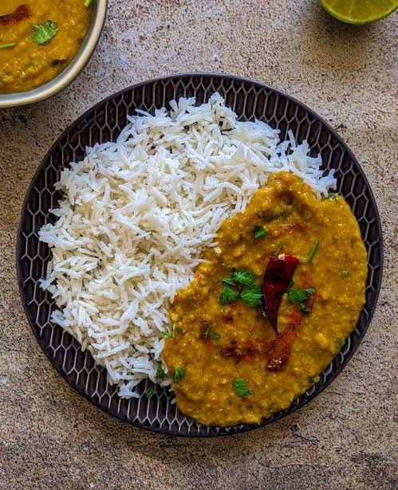

Dal Rice
⭐⭐⭐⭐⭐ 4.8 Rating | ⏱ 35 Minutes | 🍽 4 Servings
Category
Lunch / Dinner
Difficulty
Easy
Calories
380 kcal
Cooking Style
Boiled & Tempered
📋 Ingredients
- 1 cup Toor Dal (Pigeon Peas)
- 2 cups Rice
- 1 Onion (Chopped)
- 1 Tomato (Chopped)
- 2 Green Chillies
- 1 tsp Ginger-Garlic Paste
- ½ tsp Turmeric Powder
- 1 tsp Red Chilli Powder
- 1 tsp Mustard Seeds
- 1 tsp Cumin Seeds
- Curry Leaves
- 2 tbsp Oil or Ghee
- Salt to Taste
- Fresh Coriander Leaves
🍳 Required Utensils
- Pressure Cooker
- Cooking Pan
- Rice Pot
- Spatula
- Knife
- Cutting Board
- Serving Bowl
📖 Introduction
Dal Rice is one of the most popular and nutritious Indian comfort meals. It combines soft steamed rice with flavorful lentil curry, making it a healthy and satisfying lunch or dinner.
🔬 Principle
Dal becomes soft when pressure cooked, while rice absorbs water during boiling. Tempering with spices enhances aroma, flavor, and taste, making the dish delicious.
👨🍳 Procedure
- Wash rice and cook until soft.
- Wash the dal thoroughly.
- Pressure cook dal with turmeric and water for 4 whistles.
- Heat oil or ghee in a pan.
- Add mustard seeds and cumin seeds.
- Add curry leaves and green chillies.
- Add chopped onions and sauté until golden.
- Add ginger-garlic paste and cook for 2 minutes.
- Add chopped tomatoes and cook until soft.
- Add chilli powder and salt.
- Mix the cooked dal into the masala.
- Cook for 5 minutes.
- Garnish with coriander leaves.
- Serve hot with steamed rice.
⚠ Precautions
- Wash rice and dal before cooking.
- Do not overcook the rice.
- Cook dal until completely soft.
- Use moderate spices.
- Serve hot for the best taste.
💡 Chef Tips
- Add a spoon of ghee before serving.
- Serve with pickle and papad.
- Add lemon juice for freshness.
- Use fresh coriander for garnish.
- Enjoy with curd for a complete meal.
🥗 Nutrition Facts
| Nutrient | Amount |
|---|---|
| Calories | 380 kcal |
| Protein | 14 g |
| Carbohydrates | 62 g |
| Fat | 8 g |
| Fiber | 10 g |
🍽 Serving Suggestions
- Serve with pickle.
- Serve with roasted papad.
- Enjoy with curd.
- Add a spoon of ghee.
- Serve with vegetable salad.
🌿 Health Benefits
- Rich in plant protein.
- Good source of dietary fiber.
- Provides long-lasting energy.
- Supports healthy digestion.
- Contains essential vitamins and minerals.
✅ Result
🎥 Watch Recipe Video
Learn the complete recipe by watching the step-by-step video.
▶ Watch on YouTubeThe prepared Dal Rice should have soft, fluffy rice served with smooth and flavorful dal. The tempering gives the dish a rich aroma, making it a wholesome and comforting meal suitable for all ages.